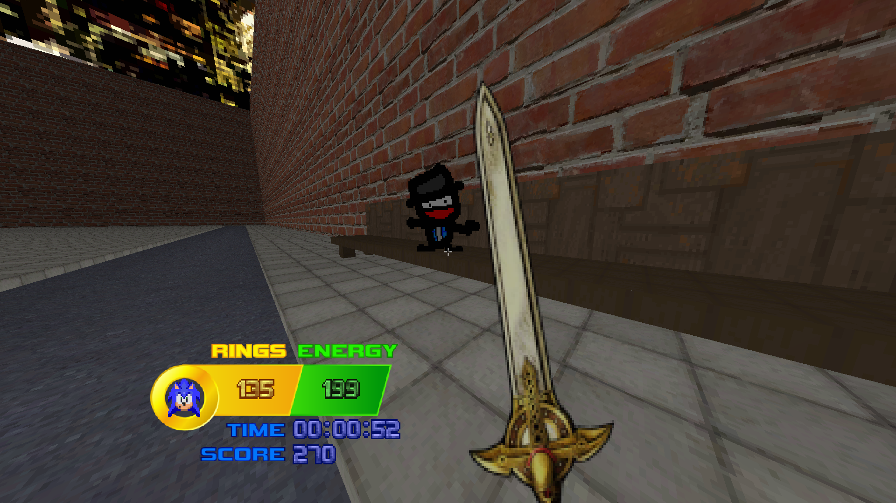

This is Doox

Small, cute and a god?!
This funky guy is only here to cheer you on, and maybe convince you to buy Doox Cola.
"It tastes good, trust me!" - Doox
Where to find him
You can find Doox chilling on the bench in Station Square, as he takes in the scenery. He likes looking at the bricks.
Attack him, and you'll find that he'll go sliding around on the floors. Don't worry, he physically cannot die.
Press the Interact key on him for him to make a funny noise. This has no effect on gameplay, but it does have an effect on your mental state, providing you (the player) with Doox Energy.
If he manages to touch an enemy while he's sliding around, the enemy will just immediately die.
Where he comes from
Doox came from The Hole.
Just kidding. He's the rather glorious child of both Dex and Mariya.
I asked Dex if I could put him in Sonic: Lock & Load when v1.0 rolled around and he basically immediately said yes, which was very nice of him.